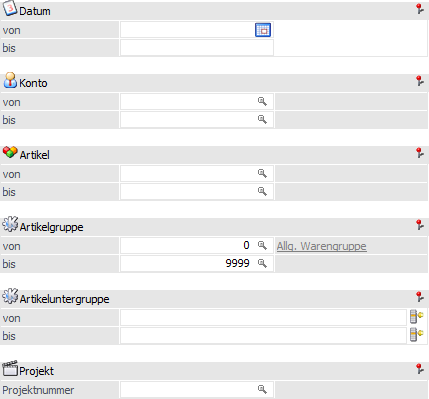
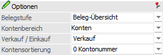
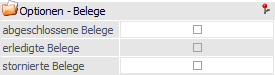
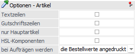
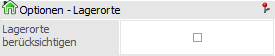

In dem Register "Selektion" werden die Hauptselektionsfelder und die wichtigsten Optionen dargestellt.
Hinweis
Bei einem Wechsel der Auswertungsmethode werden die bisher getätigten Selektionen bzw. Optionen übernommen.

Folgende Einstellungen und Selektionskriterien stehen in diesem Register zur Verfügung:
Selektion

Im Bereich "Selektion" können Einschränkungen für eine detailliertere Auswertung vorgenommen werden.
Ø Datum von / bis
Einschränkung des Belegdatums, welches ausgewertet werden soll.
Ø Konto von / bis
Einschränkung der Kunden bzw. Lieferanten.
Ø Artikel von / bis
Einschränkung der Artikel.
Hinweis
Wird im Feld Artikel von / bis z.B. nur eine Artikelnummer eingegeben und dieser Artikel hat auch noch Ausprägungen, so werden alle Ausprägungen automatisch mit angedruckt. Nur wenn während des Anklickens des "Ausgabe-Buttons" die STRG-Taste gedrückt wird, wird nur der Hauptartikel alleine ausgewertet.
Ø Artikelgruppe von / bis
Einschränkung der Artikelgruppen.
Ø Artikeluntergruppe von / bis
Einschränkung der Artikeluntergruppen.
Ø Projektnummer
Die Ausgabe kann auf eine bestimmte Projektnummer eingeschränkt werden.
Hinweis
Die Projektnummer kann bei der Erfassung eines Beleges im Kopf hinterlegt werden.
Optionen

Im Bereich "Optionen" können weitere Einstellungen bezüglich Selektion und Druckbild getroffen werden.
Ø Belegstufe
An dieser Stelle kann die Belegstufe definiert werden, welche ausgewertet werden soll. Über den Eintrag "Beleg-Übersicht" werden alle Belegstufen ausgegeben.
Hinweis
Bei der Beleg-Übersicht werden alle Belege mit dem jeweils höchsten Druckstatus berücksichtigt.
Ø Kontenbereich
Mittels Mehrfachauswahl kann entschieden werden, ob die Auswertung für Konten (Personenkonten) und / oder Interessenten erfolgen soll.
Ø Verkauf / Einkauf
Aus der Auswahlbox kann gewählt werden, ob Beleg des Typs "Verkauf", "Einkauf" oder "Verkauf / Einkauf" ausgewertet werden sollen.
Ø Kontensortierung
An dieser Stelle kann gewählt werden, wonach die Auswertung sortiert werden soll. Folgende Optionen stehen dabei zur Verfügung:
ü 0 - Kontonummer
ü 1 - Kontobezeichnung
ü 2 - Nachname, Vorname
ü 3 - PLZ
Hinweis
Diese Sortierungseinstellung wird bei den folgenden Auswertungen berücksichtigt:
ü Konten - Kurzinformation
ü Konten - Belegsummen
ü Konten - mit Einzelzeilen
ü Artikel - Einzel-Artikel
Optionen - Belege

In diesem Bereich kann eine Selektion auf den Belegstatus erfolgen, wobei "offene" Belege bei der Ausgabe stets berücksichtigt werden.
Hinweis
Die nachfolgenden Optionen werden in Abhängigkeit der gewählten Belegstufe zur Verfügung gestellt.
Ø abgeschlossene Belege
Durch Aktivieren dieser Option werden auch abgeschlossene Belege ausgeben.
Ø erledigte Belege
Durch Aktivierung dieser Option werden auch die bereits erledigten Belege ausgeben.
Ø stornierte Belege
Durch Aktivieren dieser Option werden auch stornierte Belege ausgegeben.
Optionen - Artikel

Im Bereich "Optionen - Artikel" können weitere Einstellungen bezüglich Druckbild getroffen werden. Die Optionen sind dabei abhängig von der gewählten Auswertungsmethode.
Ø Textzeilen
Ist diese Checkbox aktiviert, so werden auch die im Beleg erfassten Textzeilen mit angezeigt.
Hinweis
Diese Option ist nur bei der Auswertungsmethode "Konten - mit Einzelzeilen" verfügbar.
Ø Gutschriftszeilen
Mit dieser Option, die nur bei der Kundenstatistik zur Verfügung steht, können Belegzeilen mit ausgegeben werden, welche mit dem Zeilentyp "6 - Gutschrift" erfasst wurden.
Ø nur Hauptartikel
Wird diese Option aktiviert, so wird bei aufgeteilten Hauptartikeln anstelle der Ausprägungen nur der Hauptartikel angedruckt.
Ø HSL-Komponenten
Bei aktivierter Checkbox werden auch die Komponenten einer Handelsstückliste angedruckt, wobei auch die Option "nur Hauptartikel" berücksichtigt wird. D.h. falls aufgeteilte Hauptartikel als Unterkomponenten vorhanden sind, werden nur die Hauptartikel und nicht die Ausprägungen angedruckt.
Hinweis
Diese Option ist nur bei der Auswertungsmethode "Konten - mit Einzelzeilen" verfügbar.
Ø bei Aufträgen werden
Durch diese Einstellung kann definiert werden, welche Mengen bei Aufträgen / Bestellungen ausgegeben werden sollen. Hierfür stehen die folgenden Auswahlen zur Verfügung:
ü die Bestellwerte angedruckt
ü die noch zu liefernden Werte angedruckt
Optionen - Lagerorte

Ø Lagerorte berücksichtigen
Mit Hilfe der Option "Lagerorte berücksichtigen" werden auf dem Backlog pro Belegzeile die zugewiesenen Lagerorte ausgegeben.
Wurden zu einer Belegzeile 2 oder mehr Lagerorte erfasst, dann wird die Zeile auf die entsprechenden Orte aufgeteilt. D.h. die Mengen und die Beträge werden gemäß der zugewiesenen Lagerortmenge dargestellt.
Hinweis
Bei der Berücksichtigung von Lagerorten wird der Ausdruck mit Subformularen (tabellarischer Andruck von Ausprägungsartikeln) nicht unterstützt.